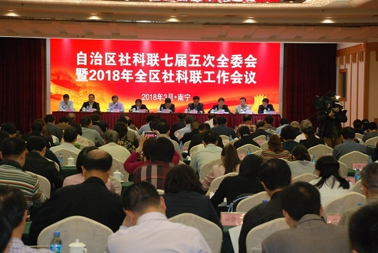

会议现场。 广西新闻网记者 季书弘摄
广西新闻网南宁3月30日讯（记者 季书弘）3月30日上午，自治区社科联七届五次全委会暨2018年全区社科联工作会议在南宁召开。自治区社科联第七届委员会委员、社会组织负责人，各市、高校、企业社科联负责人，自治区社科联干部职工近300人与会。会议由自治区社科联党组书记、主席洪波主持,自治区党委宣传部常务副部长孙大光出席会议并作讲话。
据不完全统计，2017年，累计举办学术研讨活动200余次，开展应用对策课题研究600余项，组织决策咨询活动100多场，公开发表论文1000余篇，出版学术著作800余部，社科科普读物60多部；组织业务培训活动150多场，参与培训人员7000多人次；组织学习交流活动100多次，参与人数2000多人次；获得国家社科基金项目35项,厅局级单位立项课题500余项，获厅局级及以上单位或领导批示、采纳、奖励的科研成果100余项；开展科普活动1200多场次，举办专题展览67场，发放各类书籍3.7万册、科普传单13.5万份，参与群众近80万人次。